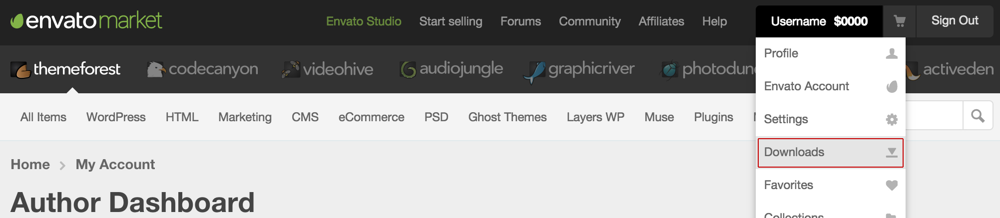
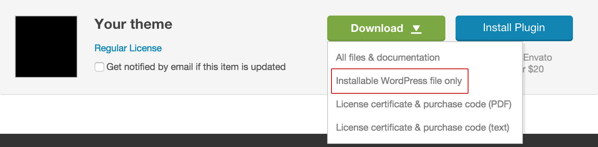
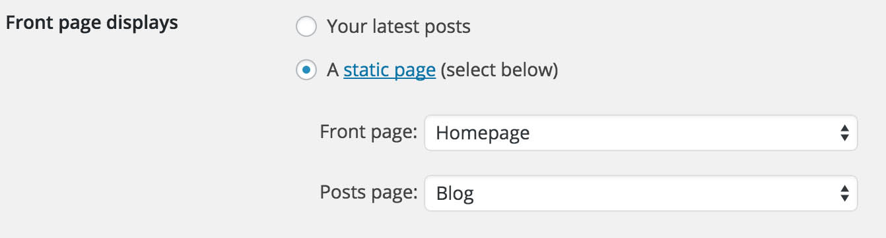
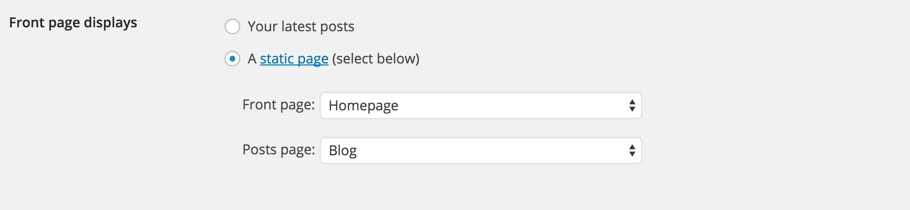
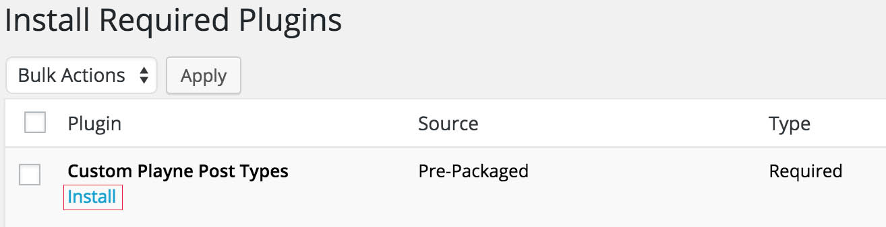
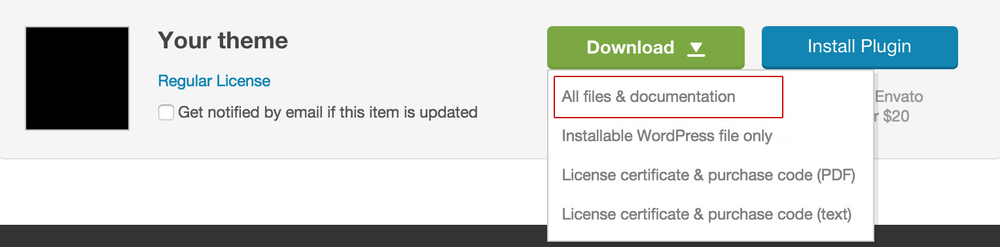
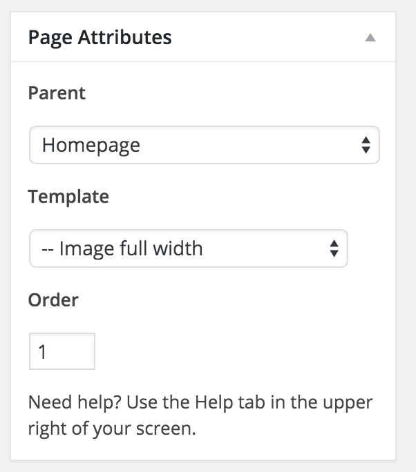
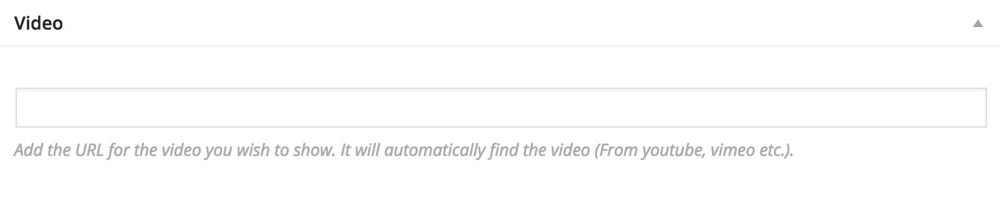
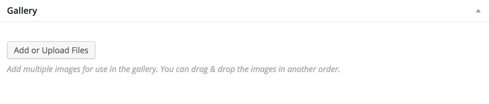
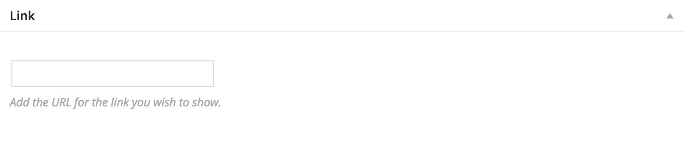

Installation
Follow these steps to install the theme to your WordPress installation. Haven't installed WordPress yet? Learn more here. This theme was built for wordpress.org use.
Install the theme
- Go to your "Downloads page" on ThemeForest. 
- Click on the "green download button" next to the theme you wish to install and choose the option "Installable WordPress file only". 
- A zip file will begin downloading once you have clicked the button in step 2.
- Log in to your WordPress admin panel. Click on the "Themes" tab under "Appearance", then click on the "Add theme" and "Upload theme" buttons.
- You can now upload the zip file you downloaded in step 2.
- Activate the theme after uploading it.
Setting the Homepage & the Blog page
- Go to your "WordPress admin panel".
- Click on the "Pages" tab and click on "Add new".
- First create a page (any name you want) and give it the "Custom Homepage" template in the right hand sidebar under "Page Attributes" to be able to use the custom Homepage template.
- Secondly create a page (any name you want) for the blog posts to show up on.
- You can now go to "Settings", "Reading" inside your WordPress admin panel.
- Under "Front page displays" click on "Static front page".
- Under "Front page" you can select the homepage page you created. under "Posts page" you can set any page for the blog posts to be shown on. 
- You can of course set any page you want as your static front page.

Setting necessary settings
- Go to your "WordPress admin panel".
- Click on the "Settings" tab and click on "Permalinks".
- Make sure "default" option is not checked. Instead choose any of the other options.
Demo content
Before importing the demo content follow these steps:
Plugins:- Make sure Playne Custom Post Types is installed before importing the demo content.
- Make sure Playne Shortcodes is installed.
- Go to "Settings" - "Media" and make sure "Crop thumbnail to exact specifications" isn't checked.
- Go to your "WordPress admin panel".
- Click on the "Tools" tab and click on "Import".
- Click on "WordPress" and install the import plugin.
- Then locate the LandyDemoContent.xml file (inside the Demo Content folder) and import it. Make sure to also check the option "Download Media Attachments".
- Wait for the import to finish.
- Go to "Settings" - "Reading".
- Check the option "A static page" under "Front page displays"
- Select the page "Homepage" as your front page and the page "Blog" as your posts page. 
- Go to "Appearance" - "Customize" and click on "Header settings"
- Click on "Background image" and upload a new image or select one of the ones you imported. You can also do this for the other pages or only add a standard header image.
- Then go to "Intro text & button" and choose a sub and header text for the homepage and/or buttons with an icons/custom effect/custom colors etc.
- Click on "Showcase image" and select the image you imported or use a custom one.
- Then go to "Appearance" - "Customize" - "Social icons" and enter your desired social platforms.
- Then go to "Appearance" - "Menus" and enter a menu for the desired menu locations
Required plugins
This theme requires a number of plugins to be installed for it to function as shown in the demo.
Playne Custom Post Types
This is the plugin that adds extra post types for use in this theme.
- Go to your "WordPress admin panel".
- Upon installing the theme you'll notice there is an information box at the top of your admin panel.
- Click on "Begin installing plugins" and a new window will open up that lists all required plugins.
- Upon hovering on one of the plugin's title you'll notice there will be a new link beneath the title called "Install". 
- Click the install link and the plugin will start installing and will automatically activate upon finishing installing.

Playne Shortcodes
This plugin allows you to use a whole bunch of shortcodes straight from your post editor.
- Go to your "Downloads page" on ThemeForest.
- Click on the "green download button" next to the theme you wish to install and choose the option "All files & documentation". 
- A zip file will begin downloading once you have clicked the button in step 2. Then make sure to unzip the file you just downloaded
- Locate the "Shortcodes" folder. Inside that folder is a .zip file called PlayneShortcodes.zip.
- You can now install that plugin by going to "plugins" - "add new" and "upload plugin" in your WordPress admin panel.
General settings
These are all general settings which you can use to adapt the theme to your liking.
Change colors
- Go to your "WordPress admin panel".
- Click on the appearance tab and click on "Customize".
- Click on "Colors" and you'll be able to change almost all colors of the theme.
Favicon
- Go to your "WordPress admin panel".
- Click on the appearance tab and click on "Customize".
- Click on "Favicon image" and upload a favicon image (can also be .jpg and .png).
Logo image
- Go to your "WordPress admin panel".
- Click on the appearance tab and click on "Customize".
- Click on "Logo image" and upload a logo image for use in the header.
Social icons
You can use social icons displayed in the footer or header area.
- Go to your "WordPress admin panel".
- Click on the appearance tab and click on "Customize".
- Click on "Social icons" and enter the URL underneath your desired social media platform (always start the link with http://).
Header settings
Default header image
This header image will be used everywhere as long as it is not overwritten by a more specifc setting (settings b - i below).
- Go to your "WordPress admin panel".
- Click on the appearance tab and click on "customize".
- A new window will open with a sidebar left and the live preview of the theme to the right. Click on "Header settings".
- Choose the "Background Image" tab and upload a header image by clicking on "Add new image".
Blog header image
This header image will be shown on the blog listing page.
- Go to your "WordPress admin panel".
- Click on the appearance tab and click on "customize".
- A new window will open with a sidebar left and the live preview of the theme to the right. Click on "Header settings".
- Choose the "Blog Header Image" tab and upload a header image by clicking on "Add new image".
Single page header image
This header image will be shown on the specific page you upload it to.
- Go to your "WordPress admin panel".
- Click on the pages tab and click on "edit" on the page you wish to change the header background image from.
- Scroll down below the post editor and locate the custom metabox named "Header background image" under "Regular Page options".
- Click on "Add or upload file" and select the image you wish to use.
Single post header image
This header image will be shown on the specific post you upload it to.
- Go to your "WordPress admin panel".
- Click on the posts tab and click on "edit" on the post you wish to change the header background image from.
- Scroll down below the post editor and locate the custom metabox named "Header background image" under "Regular Page options".
- Click on "Add or upload file" and select the image you wish to use.
Homepage buttons, text & showcase video/image
- Go to your "WordPress admin panel".
- Click on the pages tab and click on the page you gave the template "Homepage".
- Scroll down below the post editor and locate the (Home)page options.
- You can set all options such as button text, url & colors here.
This was changed in Landy 1.6. As a result you can now create multiple landing pages with different buttons, showcase images etc. with ease.
Blog page header text
- Go to your "WordPress admin panel".
- Click on the appearance tab and click on "customize".
- A new window will open with a sidebar left and the live preview of the theme to the right. Click on "Header text".
- Choose the "Header settings" tab and then the "Blog intro text" tab.
- Enter your desired text.
Header widgets
- Go to your "WordPress admin panel".
- Click on the appearance tab and click on "Appearance" - "Widgets".
- Drag a widget in the "Header subscribe" area.
Header navigation
Setting the main menu
This is the menu shown on the custom homepage page layout.
- Go to your "WordPress admin panel".
- Click on the appearance tab and click on "menus".
- Click on "Create a new menu" or edit an existing one.
- Scroll down and set the "Theme Location" to "Front page menu".

Custom homepage
Setting the custom homepage
The custom homepage is powered by different sections allowing for great flexibility. The sections are shown on the homepage layout.
- Go to your "WordPress admin panel".
- Click on the "Pages" tab and click on "Add new".
- Create a page (any name you want) and give it the "Custom Homepage" template in the right hand sidebar under "Page Attributes" to be able to use the custom Homepage template.
- This page will now display the custom homepage layout which you can adjust following the steps below.
Creating sections
All pages that have their parent set to the custom homepage will be displayed on the homepage layout as long as they don't have the default template assigned to them.
- Go to your "WordPress admin panel".
- Click on the "pages" tab and edit or create a new page.
- You can set a template via the page attributes metabox.
- Set the parent to the custom homepage page and you can use the "order" to control the order in which the sections are shown. 
Clients
Display a list of clients.
- Go to your "WordPress admin panel".
- Click on the "pages" tab and create a new page.
- Give it the page template "Clients" under "Page attributes".
- Set the parent to the custom homepage you made in step 7.1.
- You can use the order to set this section in a different order.
- Then create clients under the "Clients / Press" tab.
- If you do not see the testimonial tab make sure you installed the Playne Custom Post types plugin.
Image Full Width
Display a full width image inside the container.
- Go to your "WordPress admin panel".
- Click on the "pages" tab and create a new page.
- Give it the page template "Image full width" under "Page attributes".
- Set the parent to the custom homepage you made in step 7.1.
- You can use the order to set this section in a different order.
- Upload an image via the "Featured image" dialog and enter text in the page editor.
Image Left / Right
Display an image left or right with text next to it..
- Go to your "WordPress admin panel".
- Click on the "pages" tab and create a new page.
- Give it the page template "Image left" or "Image right" under "Page attributes".
- Set the parent to the custom homepage you made in step 7.1.
- You can use the order to set this section in a different order.
- Upload an image via the "Featured image" dialog and enter text in the page editor.
Image Slider
Display a slider of images with a lightbox enabled.
- Go to your "WordPress admin panel".
- Click on the "pages" tab and create a new page.
- Give it the page template "Image slider" under "Page attributes".
- Set the parent to the custom homepage you made in step 7.1.
- You can use the order to set this section in a different order.
- Scroll below the page editor and locate the metabox "Homepage item options" and locate the gallery option.
- Simply upload images there by clicking on "Add or Upload files". You can drag & drop them in a different order as well.
Latest News
Display a list of latest news items from your blog.
- Go to your "WordPress admin panel".
- Click on the "pages" tab and create a new page.
- Give it the page template "Latest News" under "Page attributes".
- Set the parent to the custom homepage you made in step 7.1.
- You can use the order to set this section in a different order.
Slider Left / Right
Display a slideshow with text to the side.
- Go to your "WordPress admin panel".
- Click on the "pages" tab and create a new page.
- Give it the page template "Slider Left" or "Slider Right" under "Page attributes".
- Set the parent to the custom homepage you made in step 7.1.
- You can use the order to set this section in a different order.
- Scroll below the page editor and locate the metabox "Homepage item options" and locate the gallery option.
- Simply upload images there by clicking on "Add or Upload files". You can drag & drop them in a different order as well.
- If you want to use two slider right or two slider left on the homepage, use the "Slider right 2" for the second one (same goes for two left sliders).
Testimonials Slider
Display a slider that displays testmonials.
- Go to your "WordPress admin panel".
- Click on the "pages" tab and create a new page.
- Give it the page template "Testimonials slider" under "Page attributes".
- Set the parent to the custom homepage you made in step 7.1.
- You can use the order to set this section in a different order.
- Then create testimonials under the "Testimonials" tab in your WordPress admin panel.
- If you do not see the testimonial tab make sure you installed the Playne Custom Post types plugin.
Text full width
Display a full width text area.
- Go to your "WordPress admin panel".
- Click on the "pages" tab and create a new page.
- Give it the page template "Text Full Width" under "Page attributes".
- Set the parent to the custom homepage you made in step 7.1.
- Enter text in the page editor.
Video Left / Right
Display a video left or right with text next to it.
- Go to your "WordPress admin panel".
- Click on the "pages" tab and create a new page.
- Give it any of the page templates that display a video such as "Video Left" under "Page attributes".
- Set the parent to the custom homepage you made in step 7.1.
- Scroll below the page editor and locate the metabox "Homepage item options" and locate the video option.
- Simply paste the URL to your video in the input box and it will load your video.
- Enter text in the page editor.
Video Full width
Display a video full width.
- Go to your "WordPress admin panel".
- Click on the "pages" tab and create a new page.
- Give it the page template "Video Full Width" under "Page attributes".
- Set the parent to the custom homepage you made in step 7.1.
- Scroll below the page editor and locate the metabox "Homepage item options" and locate the video option.
- Simply paste the URL to your video in the input box and it will load your video.
- Enter text in the page editor.
Feature Left / Right
Display a feature left or right.
- Go to your "WordPress admin panel".
- Click on the "pages" tab and create a new page.
- Give it the page template "Feature Left" or "feature right" under "Page attributes".
- Set the parent to the custom homepage you made in step 7.1.
- Enter text in the post editor and set an image via the "Featured image" dialog.
Homepage item options
Use options to control the design of each homepage item.
- Go to your "WordPress admin panel".
- Click on the "pages" tab and create a new page or edit an existing one.
- Scroll down below the post editor and locate the "Homepage item options" metabox.
- All the options here are pretty straight forward. Play around with them to test out all of the options
Blog posts
7.1 Video post
- Go to your "WordPress admin panel".
- Click on the posts tab and click on edit on the post you wish to change or create a new one.
- Give the post the post format "Video" under "Format" in the right hand sidebar.
- Upon clicking the video post format radio button you'll have a new metabox below the post editor called "Video". 
- Enter the URL to your video and the metabox will automatically convert your video.
7.2 Gallery post
- Go to your "WordPress admin panel".
- Click on the posts tab and click on edit on the post you wish to change or create a new one.
- Give the post the post format "Gallery" under "Format" in the right hand sidebar.
- Upon clicking the gallery post format radio button you'll have a new metabox below the post editor called "Gallery". 
- Click on "Add or upload files" and start selecting the images you wish to show. You can drag and drop them into a different order.
7.3 Quote post
- Go to your "WordPress admin panel".
- Click on the posts tab and click on edit on the post you wish to change or create a new one.
- Give the post the post format "Quote" under "Format" in the right hand sidebar.
- The title of the post is the quote itself.
7.4 Link post
- Go to your "WordPress admin panel".
- Click on the posts tab and click on edit on the post you wish to change or create a new one.
- Give the post the post format "Link" under "Format" in the right hand sidebar.
- Upon clicking the link post format radio button you'll have a new metabox below the post editor called "Link". 
- Enter the URL in the assigned metabox.
8. Page templates
Full width page
- Go to your "WordPress admin panel".
- Click on the pages tab and click on edit on the page you wish to change or create a new one.
- Give that page the "Page without Sidebar" template in the right hand sidebar under "Page Attributes" to be able to use the full width page template. This will not show the sidebar.